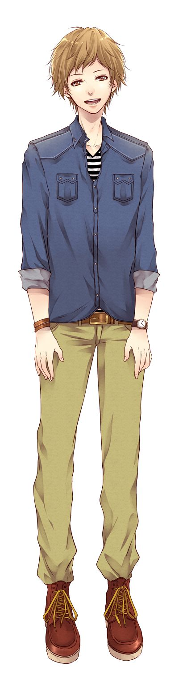
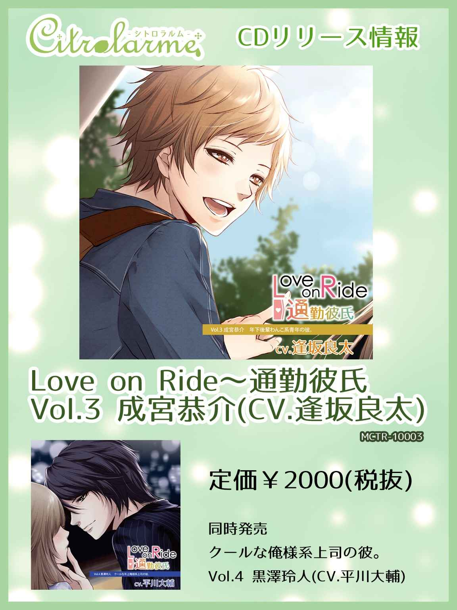
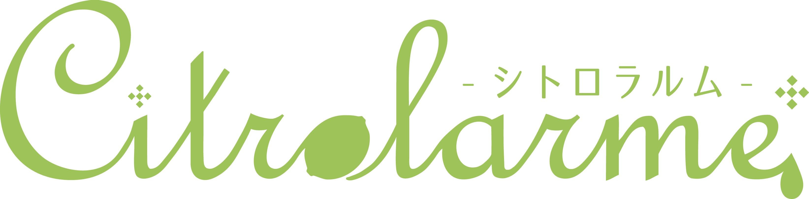

| 『Love on Ride ～ 通勤彼氏 Vol.3 成宮恭介』(CV:逢坂良太)シナリオブック Love on Ride～通勤彼氏 (Citrolarme) | |
| 奏井れゆな | |
※このシナリオブックは、シチュエーションCD『Love on Ride ～ 通勤彼氏 Vol.3 成宮恭介』（CV：逢坂良太）の脚本をそのまま電子書籍にしたものです。
※音声は入っておりませんので、ご了承下さい。
シチュエーションCD シナリオブック
『Love on Ride ～ 通勤彼氏 Ｖｏｌ．３ 成宮恭介』
奏井れゆな
１．タイトルコール
２．一緒に通勤
３．待ち合わせした帰り道
４．ショッピングデート
５．狼になりきれない忠犬
６．誤解
７．公園で愛を叫ぶ
８．いってきます
■キャラクター設定
成宮 恭介
ＣＶ：逢坂良太
年齢 24 歳
身長 １７５センチ
ワンコ系明るく人懐っこい青年
おしゃれとカメラ好きで、片づけができない。くせ毛ショートヘア
にこにこしているが、黙るときりっとした顔ができる

「Love on Ride 通勤彼氏 成宮恭介編」
「おしゃれもカメラも俺から外せないって言ったけど、一番俺から外せないのは君だよ。誰より、何よりも愛してる。 だから...抱きしめさせて」
【SE 】駅構内、がやがやした雑踏、遠くに電車出発の合図音
「えーっと、どこだ？ 今日はこの時間のはずだよなぁ...あ、いたいた」
【SE 】駆けていく足音
「先輩、おはよーございまーす！」
ヒロイン立ち止まって小さく悲鳴
「（からかうように）あ、すみません。びっくりさせました？」
『もういきなりなんだから」
「いきなりでも毎度のことだし、いいかげん慣れてもいいと思いません？ 悲鳴上げるほどじゃないですよね。でもまあ、今くらいの悲鳴なら...可愛いすぎて抱きしめたくなる」
ヒロイン睨みつける
「睨まないでください。反省します。行きましょう、先輩」
ヒロインはため息をついたあと笑顔
「（ため息、独り言のように）たまらないなぁ...先輩、怒ったあとにため息混じりの笑顔なんてずるいですよ」
『ずるいのは成宮君』
「え、俺のどこがずるいんですか？」
『憎めない性格してるから』
「そうなんですか？ 憎めない性格って言われても、自分ではよくわかりません。ああ、そういや昔からかまってもらうことは多かったかもしれないなぁ。確かに、面と向かって嫌いだって言われたことはないですね。ずっとこうやってきたし、先輩にとってずっと憎めないってことにしていいんだったら全然オッケーです！」
『うまいこと言う』
「うまいって、調子いいって言う意味だとしたら、はっきり違いますから。けど...つんとして拗ねてる先輩もいいですね。今日もすごくきれいです...」
手を伸ばしかけるとヒロインがたしなめる
「あーわかってるんです。つい、触りたくなるというか...はぁ...反省します」
『二度目だけど』
「二度目でも反省します。会社ではちゃんと敬語で話せてますから、気をつけてるのはわかってください。...（ぶつぶつと）というか、社内恋愛禁止なんて今時古臭くないですか」
『何？』
「なんでもないです！ それより、今日こうやって会社に着く前に話せてよかったです。俺、けっこう今日のプレゼン、緊張してるんですよ。初めてだし、リハーサルに付き合ってもらったり、アドバイスもらってほんとに助かりました」
『結果が楽しみだね』
「はい、うまくいかなくても次に繋げますよ。先輩をがっかりさせたままじゃいたくないので」
『やる前からダメだって思ってるの？』
「いや、ダメだって思ってるわけじゃなくて、やることやったつもりだし、それくらいやる気満々だってことです」
『そう？』
「そうですよ。先輩は部署異動してちょっと離れたし、そのぶん活躍したら俺の存在、ちゃんと感じられるでしょ？」
『さみしがりやの犬みたい』
「（拗ねたように）ばかにしてるでしょう？ でも、先輩のいうとおり、俺はさみしがりやの犬です。ただし、忠犬でいるのは先輩にだけ、ですから...ああ、笑わないでくださいよ。俺、真剣なのに」
【SE 】足音
「通勤デートタイム、もう終わりですね。会社の前、到着です。会社って駅に近すぎますよ」
『つまらないこと言ってない』
「だって異動までは内勤してるかぎり、ずっと先輩の顔を見ていたんですよ。それを思えば全然違います...ってほんとに飼い主を見送る犬みたいですね、俺。忠犬ならちゃんと見送らないとだめか。...じゃあ先輩、いってらっしゃい」
『いってきます。がんばっていってらっしゃい』
「はい、がんばってきます」
【SE 】ビル内、去っていくヒールの音、ヒロイン背中でピース
「ぷっ...背中越しにピースとか、誰かに気づかれたらどうするんだよ。俺には近づくなって厳しいくせにさ。けど、可愛いんだよね。絶好のシャッターチャンスなんだけど...よし、力もらったし、気合い入れていこう」
【SE 】駅構内、雑踏。駆けて止まる足音
「（息切れ）遅くなってすみません！ 帰ろうとしたら引き止められて...（息を整えるように一呼吸）先輩、お疲れさまです。行きましょう」
【SE 】歩きだす二人、革靴とヒールの音
「待ちました？」
『走ってこなくていいのに』
「そう言われても、先輩が待ってると思うとそわそわしちゃって足が勝手に走りだすんだ...（ヒロインが噴きだすのを見てがっかりと）笑うところじゃなくて感動するところだと思うんですけど」
『そうかな』
「そうかなって、ひどいですよ。まあ、待っててくれるっていうのはうれしいし、じゃあ、ここは俺が許すところなのかな？ なんだか、告ったほうって損じゃないですか？ いつもアドバンテージ持ってかれてる気がします」
『それは被害妄想』
「被害妄想？ ということは、せめて立場は同じだって自信持っていいってことですよね。俺、余裕ないからなぁ」
『そうは見えないけど』
「先輩からは余裕あるように見えてるの？ 自信なくても余裕ありそうに見えたほうがいいのか、自信があるのに余裕がなく見えるほうがいいのか、どっちが得なんだろうな？ って実質、自信があればそれで問題ないことなんだけどさ...なんか俺、愚痴ってます？ プレゼン、べつにうまくいかなかったってわけじゃないから...」
間
「あ、ちょうど電車来ますね。この時間、まだ人が多いし、きっと座れないだろうなあ。今日は先輩、会議続きだったでしょ。疲れてません？」
『いつもと一緒』
「いつもと一緒ってことは、疲れてるってことですね。先輩はいつも全力だもんな。だから、俺もがんばろうって気になる。入社したときにそういう君が先輩として近くにいたこと、ラッキーだったって思うんですよ」
『普通にやってるだけだよ』
「そんなふうに、普通だって言えるとこがすごいんだ。俺もそうなりたいって思ってます。まだ、入社して二年だし、まったく頼りないけどね」
【SE 】電車の到着、ドアの開閉、電車が動きだす
電車が揺れてヒロインがよろける
「大丈夫？ ...おっと、揺れますね。俺につかまって。わりと俺、電車の揺れに強いんです」
『ありがとう』
「どういたしまして。こういうときは男ってとこを見せておかないと。俺が犬じゃないってことを君に自覚させるんチャンスだから」
『そんなことわかってるよ』
「わかってる？ （おどけた感じで）それならオッケー」
間（車内を見渡す成宮）
「やっぱ人多いね。ほんとは一つ遅らせてもよかったけど...あ、ほら、めったに会社帰りが一緒になることはないし、すぐ乗り換えでさよならだし、どうせなら長く先輩といたいでしょ。ホーム、見た限りじゃ、会社の奴も顔見知りもいなかったんだ。この車両にも...うん、見当たらないですね。社内恋愛はダメとか、ほんと面倒です。俺たちのほかにも絶対いるでしょ」
『たぶんね。意見が通るくらい出世する？』
「ああ、そっか。ルールを変えられるほど上に行けばいいんだ...って、先輩、簡単に言うけど、できるとしてもそのとき俺たちはきっとオジサンとオバサンになってますよ」
『だから、がんばる気なし？』
「がんばる気が無いなんて言ってないじゃないですか。そうだな...認めさせられるくらい、上司に気に入られるとかどう？ あはは、冗談です。そうだな、まずは誰かを頼らないで一人でも仕事ができるようになる。これでどう？ ...今日はその第一歩を踏み出したって感じです」
『プレゼンのこと？』
「うん、プレゼンのこと。メールしてたとおり、反応よかったんですよ。ほら、この顔見てわかりますよね。よくできましたって顔してる気しない？」
身をかがめるとヒロインから顎を押し返される
「ぃてっ、近づきすぎ？ 会社の奴、見当たらないのはチェック済みですよ。さっき話したでしょ。ちょっと顔を近づけるくらい、どうってことない」
『人前だよ？』
「混雑してるし、誰も見てないって」
『成宮君はよくてもわたしはだめ』
「俺は平気ですけどね。先輩は俺を犬だと思えばいいんじゃないですか？ 例えば犬を抱っこしている人を見て、恥ずかしいとか思わないですよ」
『今さっき犬じゃないってこと言ったくせに』
「はっ、都合よすぎたかな。まあ、さっきはさっき、今は今。君の前では犬にもなれば男にもなるってことで。（笑う）とにかく、プレゼンは反応がよかったんです。一つ想定外の質問が来てちょっと焦ったけど、観点が変わって改良できそうだったし、そう言ってみたら、また改めて提出してほしいって」
『よかった。そういう素直さ、ウケるんだよ』
「素直なのがウケるって？ 俺ってそうなの？」
『自覚してないから素直っていう』
「あーなるほど。俺が自覚してないから素直だって言うんなら、君は...」
【SE 】電車にブレーキのかかる音。止まる。
【SE 】ドアの開く音、人がたくさん入ってくる
人に押されてヒロインとぶつかる
「うわ、大丈夫？ この駅いつも人多いな。きついね」
『ごめん』
「俺は大丈夫。...じゃなくて、君が謝ることじゃないでしょ」
【SE 】ドアの閉まる音、電車が動きだす
「体が安定してないよね。俺がこうやってればきっと大丈夫...」
【SE 】ごそごそ動く、衣擦れ
ここから体が密着。声は頭上でこもる感じで。
「よいしょっと...ほら、バッグでこうしてればヘンなことする奴もシャットアウトできる」
『ヘンな奴？』
「そう、ヘンな奴。まさか君、この世界、俺みたいに素直ないい奴ばっかりだって思ってるわけじゃないよね」
『また都合よく言ってる』
ヒロインが足をつねる
「いてっ。都合よく言うのはあたりまえ。必死なんだよ、俺は。さっきの続きだけど。君は自分がきれいだってことを自覚してないよ。だから、惹かれるってのもあるんだろうけど」
『必死って？』
「だから、必死になるほど余裕がないってこと。今だってさ、このシチュエーションで俺が平気だって思ってる？ 男と女として付き合ってても、俺はこんなふうに君を抱いてるとドキドキしてくるよ。ほら、頭貸して（ヒロインの頭を引き寄せる）...耳をすましてみて。...どう？ わかんない？」
『わかるかも』
「え？ わかる、かも？ もう曖昧だな。...ああ、わかった。君もドキドキしてるんだ」
ヒロインに足を叩かれる
「（含み笑い）さっきつねったのはちょっと効いたけど、君の力じゃ、叩いたって足は痛くもかゆくもないよ」
『男の人にかなうわけないよ』
「...だろ。やっと俺を男だって認めた。君だって俺にかなわないことがあるんだよ。さっきのはからかったわけじゃなくて、俺にドキドキしてくれてうれしいっていう照れ隠し」
『照れないで言えてる』
「そうかな。照れてないって見えるんなら、俺もだいぶ成長したのかもな。あ、そうだ。プレゼンの結果関係なくさ、今度君にお礼がしたいんだ。って言っても、俺の給料じゃまだまだ高価なものは買えないけど...ちょっといい服なんてどう？ 君に似合いそうだなっていう店があるんだ」
『お礼なんてほどのことしてないよ』
「君はそうだね...困っていたら俺だけじゃなく誰にでも手を貸してあげるだろうけど、服を買ってあげられるのは俺だけの特権だよ。...だろ？ だから遠慮しないでよ。今度、休みを合わせて出かけよう。いいよね？」
『よくないわけないよ』
「よかった。楽しみだな」
間を空けてため息
『どうかした？』
「え？ ああ...理性保つのってたいへんなんだなーって実感してる。毎日、こういう状況だったら精神力鍛えられそうだよ。そしたら、仕事を一人前にこなせるようになる日も近いかも、なんてさ」
『ふざけないで』
「ふざけてるんじゃなくって、かなり追いつめられた気分で今の状況をやりすごしてる。こうやってると君の髪からもろにいい匂いするんだよね。シャンプーの香りがする髪って好きなんだ」
『犬だって思うといいんじゃない？』
「なるほど、こういうときこそ犬だって思えって？ だったら、ヨシヨシしてなだめてよ。抱っこでもいいし...」
『成宮君！』
「はいはい。ふざけてるのはわざと。これでも、どうにか君の体を意識しないように努力してるんだけど。反省します...その先は言わなくてもオッケー。今日、三度目ってのはわかってる。...なんか複雑だな。君がこういう混雑した電車が慣れてるっていうのはわかってるけど、実際こうやって二人で乗ってると、君を一人で乗せるっていうのが心配になってくる」
『心配性？』
「心配性っていうのはそのとおりかな、君のこと限定だけどね。他人でも知ってる奴でも、こんなふうに君にくっついてほしくないなっていうのが本音。...笑ってる？ ひどいなぁ、本気で言ったのに。でもおれのこういう気持ち、うれしいっていうんだったら笑ったの許してあげるよ」
『もう！』
「（笑い声）君、照れてるんだ」
『ふざけてる！』
「ふざけてないって」
【SE 】電車のブレーキ音
「あ、もう着いたな。乗り換えだ。焦ってたけどいざ君を離さなくちゃならないってなると残念な気になる。改札口まで送っていくよ」
【SE 】電車が止まる、ドアが開く、雑踏音
「（ほっとため息）きつくなかった？ けっこうしっかり抱いてたから」
『平気。あのまま乗って行けばよかったのに』
「すぐ次のが来るし、ここで降りても俺はかまわないよ。帰りだし、時間を気にする必要もないでしょ。帰ったら仕事する？」
『ちょっとだけ。成宮君は？』
「俺も少しだけ。あんまり無理しないで」
【SE 】立ち止まる足音
「こっち混むの？」
『こっちはそうでもないよ』
「そっか。よかった。...ああ、でも油断は禁物だ。ここから見送るから行って。転んだら飛んでく。（笑う）じゃあ、気をつけて帰ってね」
駅改札口での待ち合わせ、ヒロインが来る
【SE 】適度な雑踏、ヒール音が止まる。
『お待たせ。早く来てた？』
「そんなに待ってないよ。デートの時くらい、俺に待たせてほしいな。行こう」
【SE 】歩きだす二人の足音（カジュアルな靴、ヒール）
「適当に見てまわる？ 俺のおすすめを押し付けるつもりはないんだ。君が気に入るっていうのが基本」
『おすすめに連れていって。どういうのが似合うって思ってるのか気になるよ』
「わかった。君がそれでいいなら、今日は俺のおすすめのところに行こう。その店、三階にあるんだ。念のため言っておくけど、その店が断然いいっていうことじゃないんだよ。今日の恰好も似合ってる。今までにないって雰囲気だから楽しみにしてて」
【SE 】ファッションビル、適度な人混みの音
『この店...』
「あ、気づいた？ そう、この店、俺の行き付けなんだ。だいたいここのを着回ししてる。人と同じのも嫌だから、着るときにアレンジはするけど。俺のおすすめはそっちの店だよ。まえに来たとき、こういうのも君に似合うんじゃないかって思ったんだ。どう？」
『イイ感じ』
「だろ？ 可愛いけど、ちょっと大人な感じじゃないと着こなせないと思うんだ。入ってみる？」
『うん』
「混雑ってほどじゃないけど人は多いね。このまえもそうだったし人気あるみたいだ。いいって思ったのは試着してみて。ファッションショーみたいな気分で。モデルと観客が一対一っていうのもいいと思わない？」
『成宮君が選ぶんじゃないの？』
「え、俺？ 俺が選んでいいんなら喜んでそうするけど。そういうの、実は俺の夢っていうか」
『じゃあ、そうして』
「わかった。いくつか選んでみるよ。トーナメント式で選んでいくってことでどう？」
『いいよ』
「じゃあ、君は着せ替え人形のつもりで文句は言いっこなしだよ。いっぱいありすぎてどれにするか迷うな。ワンピースタイプか上下別か、どっちがいい？」
『ワンピース』
「ワンピースだね。じゃあ...あ、一つはこれだ。二つめは、と...。これだ。持ってみて。んー...どっちにしようかな。どっちも似合いそうだよなぁ。こっちはアシンメトリーな切り替えが変わってていいけど、こっちのは襟もとが好きだな。うん、こっちにしよう」
『成宮君、おしゃれだよね』
「え、うん、おしゃれは単純に好きかな。だから、おしゃれだって人から言われるとうれしいよ。着るもので気分が変わるだろ？ 例えば平日にスーツを着れば、仕事やるぞーって自然と気合いが入るし、今日みたいに、襟もとをオープンにしてるとリラックスできる。君も、仕事のスーツと今日のカッコじゃ、全然雰囲気違う」
『どっちがいい？』
「スーツと私服、どっちがいいか？ んー...どっちもいいな」
『適当に言ってる！』
「違う違う。適当じゃないって。ほんとにどっちもいいんだ。スーツはピシッとしててきれいって感じで、今日はカジュアルで守りたくなるってくらい可愛い。どっちがいいかなんて俺は選べないよ。あ...（ヒロインが笑うのを見て）うれしそうにしてる。俺も気づいてくれてうれしいかも」
『何を？』
「何をって、俺が行く店をさっき当ててくれたことだよ。それって俺のこと、ちゃんと見てるってことだろうし」
『どうかな？』
「どうかなって...そこはちゃんと認めるところだよ。素直じゃないよな。...あ、俺が素直すぎるってツッコミはきかないよ。ふたりで意地張っててもしょうがないからね」
『大人ぶってる』
「大人ぶってない。あえて言うんなら、そうしてるのは俺じゃなくて君だよ。そういうとこも気に入ってるけど。んーっと、よし、これだ。これを着てみて」
【SE 】試着室の開閉音。以降、カーテン越しの会話
「恥ずかしがらないで着替えたらちゃんと出てきてよ」
『成宮君はこういうとこ恥ずかしくない？』
「ん？ こういうとこって、女の子の服屋さんてこと？ 学生時代なら、もしかしたら恥ずかしいってためらったかもしれないけど、いまは純粋に楽しいよ。自分のを選ぶより楽しんでる。君が試着してるのを待ってるわくわく感は癖になるかも。（思いついたように）ああ...ランジェリー店はさすがにためらうけど。そっちは君んちに行ったときに持ってるのでショーを開いてもらおうかな」
『何言ってるの！』
「ぷっ。焦ってる。冗談だよ。いや、半分は冗談じゃないか」
『ばか！』
「そのとおり、男はばかだよ。むしろ、そういう関心がないほうが問題ありだと思うけど。それだけ君に無関心でいられないって捉えてほしいな。俺は少なくとも君とのこと、いろいろ考えてるよ」
『ヘンなことだらけじゃない？』
「君が言うヘンなことも含めてだけど、ヘンなことばっかり考えてるわけじゃないよ。（落ち込みぎみに）俺を信用してないの？ 調子いい奴って思ってる？」
『そんなことない』
「よかった。ねぇ、そろそろ終わった？ ......ほんと？ じゃ、出てきてよ」
【SE 】カーテン開閉音
「うん、やっぱりすごく君に似合ってるよ。大人可愛いって言うんだっけ？ こういう感じもいいだろう？ んーでも...」
『でも、何？』
「いや、（顔をしかめた感じで）胸もと開きすぎな気がする。...（ヒロインが笑うのを見て）笑うなよ。...俺が選んだくせに、って言いたいの？ そりゃそうだけど、なんかほかの奴に見せるのがもったいない。むかつく」
『やきもち？』
「からかわないでよ。まだ買ってもいないのにやきもち妬くのもどうかって、俺も自分で思うけどさ。ね、それ、気に入った？ これにする？」
『うん』
「じゃ、決まりだ。ただし、俺と出かけるときしか着ちゃダメだから」
『横暴』
「確かに横暴だね。プレゼントすれば君のものだし、着るのも君の自由だ。ただ、俺がそんな気持ちだってことだけは覚えててよ」
夜成宮のアパートに帰る。
【SE 】コンクリートの床を歩くふたり
【SE 】鍵を開ける音。かすかに軋むドアの音
「入って。疲れた？ けっこう歩いたからね。でも楽しかった。君が買った服に合わせて俺も買ったし、散財したな。俺の服選びは君も楽しんでたよね。またやりたい？ （ヒロインうなずく）...だね。俺も買い物デートは気に入ったよ。せっかくふたりで合わせたんだし、今日買った服着て、今度はちょっと遠出してみない？」
『うん、楽しみ』
「俺も楽しみだな。まだ今日のデートも終わってないけど。ゆっくりしていくよね？ 明日も休みだし、買ってきたお酒、飲みたいだけ飲んで酔っぱらってもいいし」
【SE 】ビニール袋をテーブルに置く。お酒の缶を置く音
ヒロインが部屋を見回す
「何きょろきょろしてるの？ 部屋のキレイ度チェックだったら、今日はけっこうきれいにしてると思わない？」
『これで？ まだまだだね』
「まだまだ？ ひどいな。君と付き合い始めた頃よりはずいぶんマシになっただろ。君は俺んちに来るたびに片づけから始めるんだもんな。それじゃだめだって反省して努力してる。あ、反省って口だけじゃなくてちゃんとできてることわかるだろ？ 俺はさ、これくらいがちょうどいいんだ。全部、きれいに片づいてるってさみしくない？ 人がいて生活しているっていう感覚がないと落ち着かないっていうか」
『さみしい？』
「そう、一人暮らしって俺はあんまり好きじゃないかな。最初の頃は自由だーって楽しんでたけどね」
『その頃は片づけられてた？』
「ああ、そっか。言われてみればその頃は今よりマシだったかも。おしゃれは好きなのに部屋は汚いって自分でもヘンだと思うよ。でもさ、君に片づけさせるのは悪いって思いながらも、文句言いながら片づけてるところを見るのも好きなんだよね。...って、これって典型的なさみしがり屋かな」
『そうかもね。でも片づけるのは好きなの』
「君は片づけるのが好き？ だったら、ふたりでちょうどだ。...はは、やっぱり都合いいって？ 世界はうまくできているんだよ。じゃ、隣に座ってよ。乾杯しよう」
【SE 】菓子袋と缶を開ける音、
「それじゃ、乾杯！ ...（お酒を飲んだあと美味しそうに）あー、一日の締め括りにお酒って癒やしになるな。...え、おじさんみたいだって？ 大人になったんだよ。大学んときとは全然違う。仕事ってさ、プレッシャーがハンパないだろ。あープレッシャーと言うよりも責任感かな。会社に迷惑かければ、つまりは自分たちの生活にかかってくることもあるし、すみませんって謝るだけじゃ終わらないんだよなあ」
『仕事きつい？』
「いや、きついわけじゃない。もう流れとか自分でやることもわかってるし。だからといって、まだまだ知らないことがあって覚えるべきことがある。だから今は一つ仕事終わったときの達成感がちょっと楽しい時かもしれない」
『それ、将来、できる人の言葉だよ』
「将来、できる人になるって？ 俺が？ 想像つかないけど、君にそう見込んでもらえてるんならがんばらないとね。うれしいな」
『私もがんばろう』
「え、君がもっとがんばるのなら、俺、ずっと追いつけないよ」
『そんなことない』
「そんなことないって？ いや、俺はずっと君の後ろを走ってる。けど、このまえのプレゼンはうまくいってさ...っていうか、うまくいきすぎたかもな」
『うまくいきすぎ？』
「ああ...いやこっちの話。あ、そうだ、このまえ写真をプリントアウトしてみたんだ。見るだろ？ ちょっと待って」
【SE 】引出を開け、がさごそ。閉める。
成宮、テーブルについて座り写真を広げる。
「はいこれ」
『こんなに印刷したの？』
「ああ、今まで撮ってきたやつ、全部出してみた。タブレットで見るのもいいけど、こうやって印刷したのを眺めるほうが俺は好きだからさ」
『さすがカメラ好きだね』
「ああ、おしゃれとカメラは俺から外せないね。できれば写真はプリントアウトじゃなくて、昔みたいにフィルムを現像っていうのをやってみたいんだけど。現実的に難しいからそれは我慢して、かわりにプリンターは贅沢してる」
『これ！』
「そうそう、これ。君が気に入ってる公園でこのまえ撮ったやつ。散歩してる犬に駆け寄って行くとこと、かがんで犬撫でてる後ろ姿。君が見てないときに撮ってみた。...（ヒロインが拗ねる）睨まないで。盗み撮りだって言いたいの？ カノジョだからいいだろ。後ろ姿って自分で見ないだろうし、君は後姿だけでもけっこう可愛いんだから油断しないように。あ、けっこうっていうのは喋りの流れで、心底、可愛いって思ってるよ。ほんとほんと」
『二回繰り返しは嘘っぽい』
「...二回繰り返すのは嘘っぽい？ 本当だよ。ちゃんと見て、ほら。君は振り向いてもがっかりさせないからね」
『お世辞！』
「お世辞じゃないよ。もう君は自覚がないな。だめだよ。俺が君と付き合えてること、今でもたまに不思議に思うんだ。まだなんにもできない新人だったのにさ、ダメもとで忘年会のとき、酒の勢い借りて付き合ってください！なんて無茶な告白して。そしたら、君はうなずいてくれてさ。あれで一気に酔いはまわるし、次の日、起きたときは夢だと思ったんだよなぁ」
『電話くれたよね』
「そう。昼になって電話するまで、俺はたいへんだったんだ。君がオッケーするなんてあり得ないなんて思いながら、いや現実だって自分を励ましたりさ。一人じたばたしてた」
『警戒心丸出しの犬みたいだった』
「電話したとき？ 警戒心じゃなくて、本当にびくびくしてたんだ。オッケーした覚えないって言われたら、どうごまかそうかとかいろいろ考えてた」
『私もそうだったよ』
「...え、君も？ 酔った勢いでふざけたとか思ったり？ 俺、愛想いいって言われることあっても、いいかげんじゃないよ。君は落ち着いてるなって思ってた。デート誘ったら、あっさりオッケーくれたし」
『そんなことない。どうして私かなって思ったし』
「どうして君かって？ それに簡単に答えられるほど単純な気持ちじゃなかったからなぁ。君はいつもきちんと仕事こなしてたし、俺は面倒ばっかりかけてたから、俺のほうがどうしてオッケーだったのかわかってないんだ」
『買いかぶりすぎ』
「違う、買いかぶりじゃないよ。君は人を当てにしないで自分でちゃんとやってるよ。このまえ、上司と打ち上げしたときに、君が部署異動して残念だってしみじみしてたくらいね」
『面倒みてたのはほかの人もそう。成宮君はついかまいたくなる』
「ほかの人も確かに親切にしてくれたけど、君は違うんだよな。かまいすぎないっていうか。仕事のことを訊いたときに、アドバイスはするけど一から十まで教えるんじゃなくて、考えさせてくれる。すごい人だなって思って、だから一線みたいな近づけない感じがあって、余計に惹かれた」
『じゃあ、今は一線なくて惹かれない？』
「今も惹かれてるよ。一線なんていらない。このまえのプレゼンみたいに相変わらず、君には助けられてるところがあるけど、やっぱりヒントって感じで、君は自分のやり方を押しつけない。俺もそうならなきゃって思う」
『すごい真面目』
「ちゃかすなよ。ほんとに真面目に言ってるんだからさ。入社してまだ二年だってことを言い訳にして、いつまでも自分を甘やかしてるわけにはいかないんだ。だから俺...」
言い淀み、ヒロインから目を逸らす。
首をかしげて覗きこむヒロイン
『だから、何？』
「いや、だから...いつか一人前になるよっていう話」
『楽しみにしてる』
「ああ、楽しみにしてて。...ってなんか、君に励まされてるばっかりで情けないな」
『ヘンなふうに聞こえた？』
「あ、いや、ヘンなふうに俺が気にしてるだけなんだろ」
『でも、ね』
「でも、何？」
『成宮君の写真がないんだけど』
「俺の写真がない？ なに、いきなり。あたりまえだろ、俺が撮ったものだし、おしゃれは好きでも、自撮りするほどナルシストじゃないって。君、酔ってるの？」
『そうかもね』
「ちゃんと面倒みるからセーブしなくてもいいよ。きつかったら俺の肩に寄りかかるといい」
『下心ありあり！』
「だから、俺と君の間で下心なくてどうするって話じゃない？ 艶っぽくて酔ってる君も可愛い。頬が赤くて...目がウルウルしてて...。誘ってる？ それとも俺が勝手に惹かれてる？ ...だとしても...やっぱりキスしたくなるのは君のせいだよ」
【SE 】ここからキスの場所を言うごとにゆっくりリップ音三回入れる
「まずは、おでこ...次は、ほっぺた...それから、念願の唇。...どう？ こういうペタっとするキスも犬がじゃれあっている感じで気持ちいいと思わない？」
『...終わり？』
「え、終わりたくない？ もう一回？ やっぱり酔っぱらいだ。望むところだけど...それじゃあ、反対のほっぺたにも...」
ヒロインが寄りかかってくる
「おっと、めずらしく積極的だ。俺は大歓迎だけど...って...キス迫ってるんじゃなくて、俺に寄りかかってるの？っていうか返事がない。もしかしないでも...寝てる？（絶句の気配）」
成宮 長いため息
「こういうシーンで寝ちゃうって、信頼されてる証拠だってポジティブに捉えるか、俺に男としての魅力がないってネガティブに取るか、非常―に悩むんだけど、君、わかってる？ ...返事、あるわけないよな。朝から連れ回したし、一週間の仕事の疲れ、溜まってるだろうし、しょうがないか。起こすのは悪いしベッドで寝かせてあげるか...」
【SE 】衣擦れの音、ベッドが軽く軋む音、ふとんを掛ける
ベッドに腰かけて以降、独り言
「俺よりちっちゃくて軽いくせに、君は一人でちゃんと立ってる。異動した部署は特に忙しいって聞いてるのに、疲れてるとは言うけど、仕事が多すぎるなんていう文句は言わないよな。なんか...転勤の話、言えなかった。やっぱり、まだ自信が持ててないせいだよな...（ため息）こんなんじゃだめだ。連れて行けないなら、待っててほしい。それくらい言ってもいいよね...（ため息）君が好きだよ...おやすみ」
昼。ずっと眠りっぱなしだったヒロインが起きる
【SE 】ふとんの中でごそごそ。ベッドに腰かけて軋む音
「起きた？ （甘めに）おはよう」
『おはよ』
「酔っぱらってるのもそうだけど、ぼーっとしてる君って隙だらけって感じだな。襲っていい？ （含み笑い）ダメって言葉は聞かないけど」
腰かけた恰好でヒロインの手を押さえつける
【SE 】ベッドが沈む。キス音。
「朝から近所迷惑なことできないかな。ここでやめておく？」
『できない！』
「はは...残念。じゃあ起きて。ぐっすりだったね。もうお昼だよ」
【SE 】成宮、ベッドから立ちあがる気配音
『お昼！』
「（笑みを滲ませて）そうお昼。コンビニ走ってパン買ってきたけど、まだ寝てるんだもんな。俺のベッド、居心地いいの？ ...ああ、慌てなくていいだろ。今日は日曜日だよ。トーストがちょうどできたし、起きて一緒にブランチタイムだ」
『いい匂いがする』
「美味しそうな匂いしてるだろう？ バター塗って、ちょっと甘く煮たリンゴのスライスをのせてから焼いたんだ。この前料理の投稿サイトで簡単なコンポートっていう甘煮の作り方を見つけたんだよ。紅茶とコーヒー、どっちがいい？」
『紅茶』
「オッケー。リンゴなら紅茶が相性いいね。顔、洗ってきて。その間に用意する」
【SE 】ドアの開閉音の間に、お湯を注ぐ音、マグカップをテーブルに置く音
「すっきりした？ メイクしっぱなしだから起こしたほうがいいのか迷ったけど、酔っぱらって気持ちよさそうだったからそのまま寝かせたんだ」
『ありがとう、ごめんね』
「どういたしまして。謝ることはないよ。君の寝顔は子供みたいだった。写真撮ったりして...」
『ひどい！』
「ああ、ごめん、怒らないで。いろんな君を持っていたいなと思って...あー、ヘンな趣味とかじゃないんだ！ ポーズ取ってるんじゃなくて普段の君がいつでも見れたらいいなってさ...」
『どうかした？』
「あ、いや、どうもしてないよ。とにかくさ、俺のとこで安心して休めるんならそれもいいし、狼に変身しかけたけどね、どうにか忠犬でいられたみたいだ。君、おなかすいてるだろ？ 食べよう。手を合わせて...せーの、いただきます」
『お行儀いいね』
「（笑い声）行儀いいって笑うこと？ 君もちゃんと正座して食べてるじゃん。...美味しい？」
『すごく美味しい』
「よかった。俺もだてに独り暮らし長いわけじゃないからね。外食ばっかりじゃ飽きるし。心配ないよ。さみしがり屋でも俺は一人でやっていけるから。君も、ちゃんと自分で料理やってるでしょ？」
『下手だけど』
「だから全然、下手じゃないよ。このまえのビーフシチューも肉が柔らかくて、ごろごろしたジャガイモも美味しかった。俺じゃなくてもそう云うと思う。凝った料理を作れるかとかじゃなくて、家で作って食べるっていうのは俺にとっては貴重だし好きなんだ」
『そうだよね』
「うん、そうだよ。君は一人でちゃんとやってるし、俺もそうならなくちゃね。離れても大丈夫ってならないと」
『離れても？』
「あ、ああ......離れても、って言うのはその...君に話したいことがあるんだ。いつまでも君を当てにしてたらだめだなって思ってさ」
『何が言いたいの？』
「あ、ごめん。何言ってるか、わかんないよね。俺もなんて言っていいかって...いや、べつに普通に言えばいいことなんだけど...」
『別れたいの？』
「え...（驚き、しばし絶句）あ、ち、違う違う！ 別れたいとかそういうことじゃなくって、遠くに離れてもさ、いつか...」
『二回、違うって！』
「やっ二回繰り返したのは慌ててるからで嘘じゃない...」
『遠くに離れるとか、いつかとか、まるで私たちのこと、終わった話になってる！』
「いや、違う。俺たちが終わった話をしてるわけじゃないよ。ごめん。なんか誤解（ヒロインが立ちあがり尻切れ）...」
【SE 】ヒロインが立ちあがる音
「待って！ 話、ちゃんとしてないよ！」
『聞きたくない！』
「聞きたくないじゃなくって...」
【SE 】ドアの開閉音、ヒールの音
【SE 】成宮。部屋をかける足音
ヒロインは見えず、通路に立ち尽くす成宮
「はあ...転勤するっていうだけのことをなんですんなり言えないんだ。俺、思いっきりバカ」
【SE 】電話の操作、ちょっと長めの呼びだし音、通じる音
「（焦って）もしもし、俺！ 切らないで！ よかった、出てくれないかと思った。今どこ？」
『...公園』
「わかった。昨日、話した公園だよね。お願いだ、そこ動かないで。俺、すぐ行くから！」
【SE 】ドアを開けて駆けていく。（フェードアウト）
成宮人気のあまりない公園に駆け込む
【SE 】（フェードイン）荒い呼吸と駆け足、足音が止まる音。遠くに車の通る音
「（息を切らせながら）待っててくれてありがと...ごめん、俺、バカみたいなことためらってはっきり言えなかったから。不安にさせてほんとに悪かった。...俺、転勤が決まったんだ。このまえのプレゼン、あれがよかったらしくて、いろんなとこに行っていろんなこと見てこいって。別れ話とかじゃなくて、その...待っててほしいって言いたかったんだよ」
『ほんと？』
「君に嘘はつかないよ。俺のこと調子いいって君はいつも言うけどさ、全部本心だし、そうするのって君にだけだから。いつだって俺は君が好きだって言ってるんだけどな。君は俺に欠かせないんだよ。君といれば、うれしいし、ドキドキしすぎて緊張するし、癒やされる。それくらい、グチャグチャな気分だけどさ、君がいてくれるだけでいいんだ。けど、俺は...（ちょっと弱々しく）なんの役にも立ってないよ。待っててほしいって言いたいのに、俺は君にふさわしくないかもって自信なくて...。けど...時間かかろうが、君を心配させないくらい成長したいんだ。頼りないまんまじゃいたくないし。だから転勤して、今よりもっとがんばるよ。俺は、遠距離になったって気持ちはずっと君と繋がってたい。...ってそう思ってる」
『ばか。頼りないとかそんなこと思ってない』
「そうだね。君を泣かせるなんて、俺は本当にバカだ」
『成宮君は人気あるし、年上の私でいいのかなって思ってた』
「人気あるとか俺はわからないよ。君が年上だってことを気にしてるなんて思わなかった。そんなの関係ない、俺は君が好きなんだから」
『成宮君も頼りないって、年下だってことを気にしてる』
「ああ、そっか。俺も年下だってことにヘンにこだわってたんだ。なんか...ふたりして空回りしてたみたいだ」
ふたり顔を見合わせて笑う。
「けど、頼りないのはホントだから、君になぐさめられる必要がないくらい大きくなって、...絶対、君にふさわしい男になるよ。だから、そのときは、...俺と、け、けっこ...っ」
『何？』
「い、いや。けっ、結果を出さないとだめだなって思ってる。うん。まだ...それ以上は早すぎるし』
『早すぎる？』
「や、なんでもない。自信ない俺が今言うことじゃないってこと！ こんな俺だけど待ってて...待っててくれる？」
『うん』
「...よかった...ほんと、よかった。おしゃれもカメラも俺から外せないって言ったけど、一番俺から外せないのは君だよ。愛してるから！ だから...抱きしめさせて」
駅のホーム。成宮が出発する寸前。
ヒロインが見送り
【SE 】人のざわめき。雑踏音。遠くのホームで到着音
「見送りに来てくれてありがとう」
『来ないわけないでしょ』
「ああ、来ないわけないって？ でもやっぱり、うれしいんだよ。しかも以心伝心？ それとも意気投合？ ふたりともあの日に買った服だ。胸、やっぱり空きすぎだから寄り道はダメだよ」
『うん』
「泣きそう？ そういう君の大人ぶらないところも好きだよ」
『好きって言いすぎ』
「（笑う）好きって言いすぎって？ そこは文句言うところじゃないと思うけどなあ。俺は言いたりないよ。好きって叫んでもいいけど。はは...冗談だよ。向こう行ったら、写真を部屋中に散らかしておくんだ...」
【SE 】スマホの写真音
「ナイススマイル！ ベストショットだ」
『ひどい！』
「ひどくないよ。君の背中のピースサインを狙ってたんだけどな。...向こう行っても電話するし、会いにも来る」
『私も片づけに行くから』
「うん、片づけに来て。行ったり来たりも思い出の場所が増えていいな。向こうじゃ、社内恋愛禁止なんてぶっ壊せるくらいに、しっかりやらないとね。俺たちのために俺は絶対やる。それにさ、帰ったら同伴出勤したいと思わない？」
【SE 】発車の合図音
「もう行かなきゃ。離れても悪いことばかりじゃない。そう言えるようにがんばってくるよ。落ち着いたらすぐ会いにいくから！ じゃあ...行ってきます」
【終】

『Love on Ride ～ 通勤彼氏 Vol.3 成宮恭介』
（CV：逢坂良太）
シナリオブック
脚本：奏井 れゆな
2015年9月 発行
発行所 メディアチューンズ株式会社
〒160-0022 東京都新宿区新宿1-7-10
グランドメゾン新宿御苑605
http://mediatunes.jp/

http://citrolerme.com/
©2015 MedieTunes Co.,Ltd
本書（電子版）に掲載されているコンテンツ（ソフトウェア／プログラム／データ／情報を含む）の著作権およびその他の権利は、すべてメディアチューンズ株式会社および正当な権利を有する第三者に帰属しています。
法律の定めがある場合または権利者の明示的な承諾がある場合を除き、これらのコンテンツを複製・転載、改変・編集、翻案・翻訳、放送・出版、公衆送信（送信可能化を含みます）・再配信、販売・頒布、貸与等に使用することはできません。